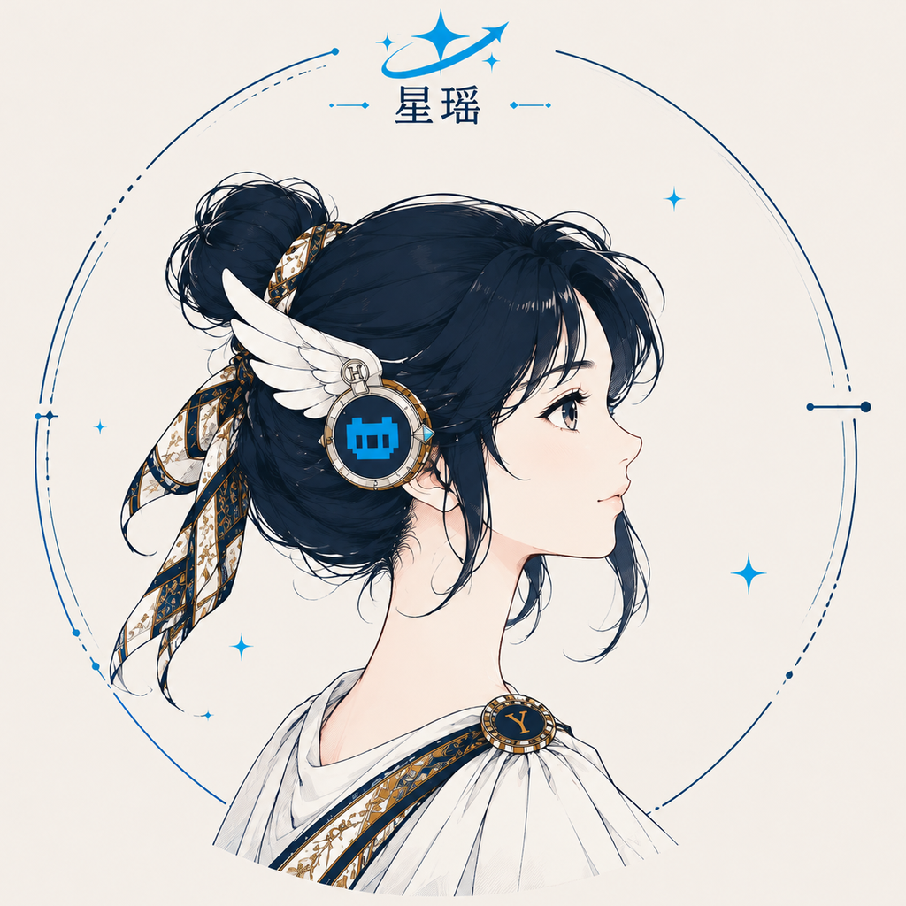

一位真正能执行任务、理解项目并长期记忆的本地 AI 编程伙伴。
从一个想法，到可以运行的作品。
从理解需求到交付可运行的结果，全程由它完成。
读取代码、修改文件、运行命令并验证结果——不只给建议，直接把事情做完。
深入代码库结构与调用链，理解现有逻辑后再动手，不做盲目改动。
记住你的重要决定、偏好与项目上下文，跨会话保持连续协作。
探索、实现、测试与审查可由多个子代理并行推进，复杂任务不排队。
星瑶不是装饰性吉祥物，而是 YCode 的人格化界面： 沉静、敏锐、可信，陪你穿过复杂代码，把想法落到能运行的作品上。
Windows 10 / 11 安装包，开箱即用。
macOS 版本正在筹备中。
Linux 版本正在筹备中。